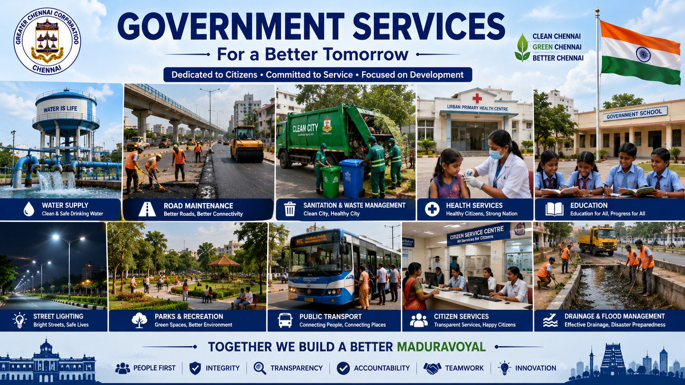

Learn about the essential public services provided by the Greater Chennai Corporation for the welfare and development of the people.

Drinking Water Supply
Providing clean and safe drinking water is one of the primary responsibilities of the Greater Chennai Corporation. Water is supplied to residential areas, schools, hospitals, offices, and commercial establishments through pipelines and storage facilities. Regular maintenance of water pipelines ensures uninterrupted water supply to citizens.
The Corporation also encourages water conservation through rainwater harvesting, awareness campaigns, and efficient water management systems. Citizens are advised to use water responsibly to support sustainable development.
Road Maintenance and Transportation
Well-maintained roads are essential for the smooth movement of people and goods. The Corporation regularly repairs damaged roads, constructs new roads, improves drainage systems, and installs traffic signs to ensure public safety. Flyovers and highways connecting Madhuravoyal to different parts of Chennai have significantly improved transportation facilities.
Road development projects help reduce traffic congestion, improve connectivity, and promote economic growth by making transportation more efficient for residents and businesses.
Sanitation and Waste Management
Maintaining cleanliness is one of the most important civic responsibilities. The Greater Chennai Corporation organizes daily garbage collection, waste segregation, recycling initiatives, public sanitation programmes, and cleaning drives to ensure a healthy environment for all citizens.
People are encouraged to separate biodegradable and non-biodegradable waste and avoid littering in public places. Community participation is essential for maintaining a clean and green locality.
Public Health Services
Government hospitals, urban health centres, vaccination programmes, maternity care, emergency medical services, and disease prevention campaigns are provided to improve public health. Health officers regularly inspect food establishments, monitor sanitation, and conduct awareness programmes on hygiene and disease prevention.
The Corporation also organizes free health camps, vaccination drives, and medical check-up programmes for the benefit of residents.
Important Public Services
Service
Description
Water Supply
Distribution of clean drinking water.
Road Maintenance
Construction and repair of roads.
Waste Management
Daily garbage collection and recycling.
Public Health
Hospitals, vaccination and health awareness.
Street Lighting
Installation and maintenance of street lights.
Online Citizen Services
The Government has introduced various online services to make public administration more transparent, faster, and convenient for citizens. Residents of Madhuravoyal can access many civic services through official government portals without visiting government offices. These digital services save time, reduce paperwork, and improve the efficiency of public administration.
Citizens can apply for certificates, pay taxes, register complaints, track applications, and receive updates online. Digital governance helps improve communication between the government and the public while ensuring faster service delivery.
Birth and Death Certificate Services
The Greater Chennai Corporation issues Birth and Death Certificates for residents. These certificates are essential legal documents required for school admissions, passport applications, employment, banking services, and various government schemes. Citizens can apply both online and offline through the appropriate government offices.
Property Tax Services
Property owners are required to pay property tax regularly. The revenue collected through property tax helps the Corporation maintain roads, street lights, public parks, sanitation facilities, drainage systems, and other civic infrastructure. Online payment facilities make the process simple, secure, and convenient.
Parks and Recreation
The Greater Chennai Corporation develops and maintains parks, playgrounds, walking tracks, gardens, and recreational spaces for the benefit of the public. These green spaces improve environmental quality, encourage physical activity, and provide a peaceful atmosphere for families and senior citizens.
Tree plantation programmes, cleanliness drives, and environmental awareness campaigns are regularly organized to promote a greener and healthier community.
Emergency Public Services
Service
Purpose
Police
Maintains law and order and public safety.
Fire & Rescue
Provides emergency fire and rescue services.
Government Hospital
Offers emergency medical treatment and healthcare.
Ambulance
Provides emergency medical transportation.
Disaster Management
Responds to floods, cyclones, and natural disasters.
Citizen Responsibilities
Keep public places clean.
Use water wisely and avoid wastage.
Pay property taxes on time.
Follow traffic rules.
Protect public property.
Report civic problems to local authorities.
Participate in environmental protection activities.
Support government welfare programmes.
Why Public Services Matter
Public services improve the quality of life of every citizen. Clean drinking water, proper sanitation, good roads, public healthcare, education, and environmental protection contribute to a safe and healthy society. Efficient government services promote economic growth, improve living standards, and strengthen public trust in local administration.
Help
This page provides information about the important public services offered by the Greater Chennai Corporation in Madhuravoyal. Students and citizens can understand how local government departments work together to improve public welfare, maintain civic infrastructure, and deliver essential services efficiently.